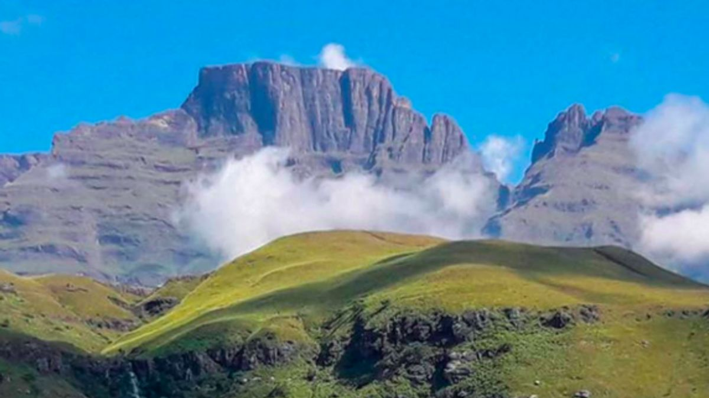
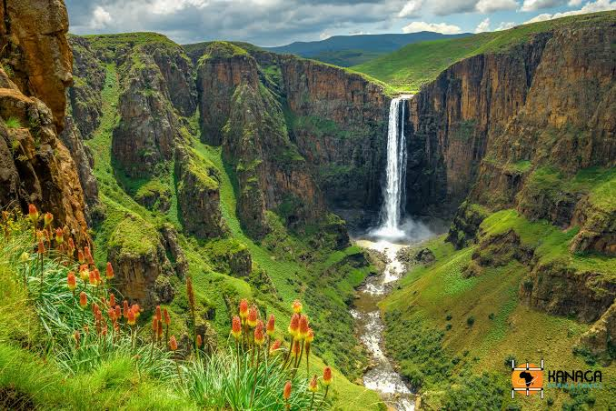
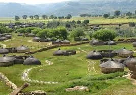
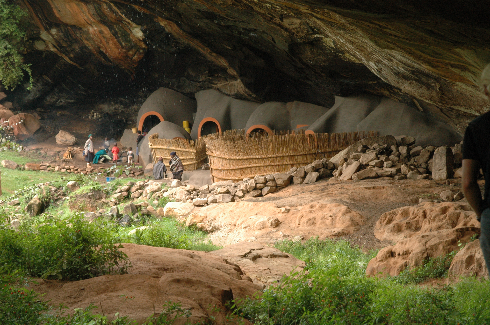
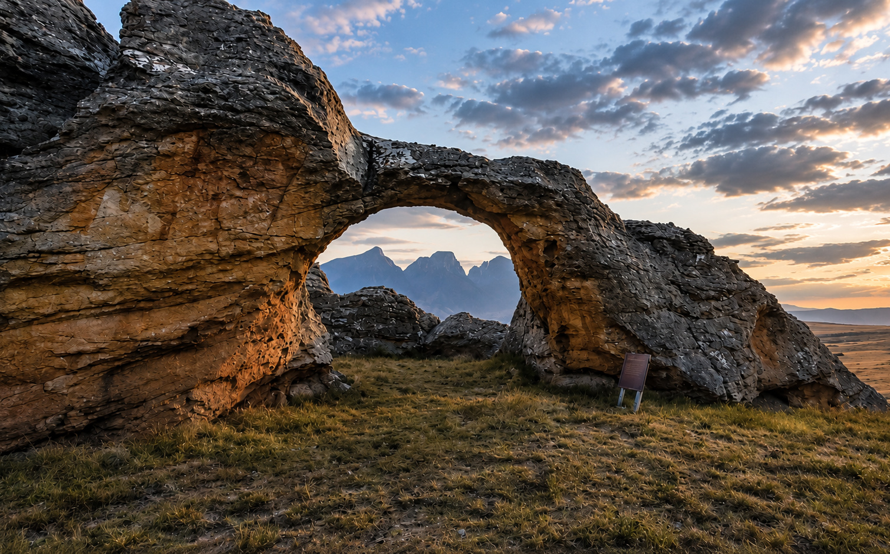
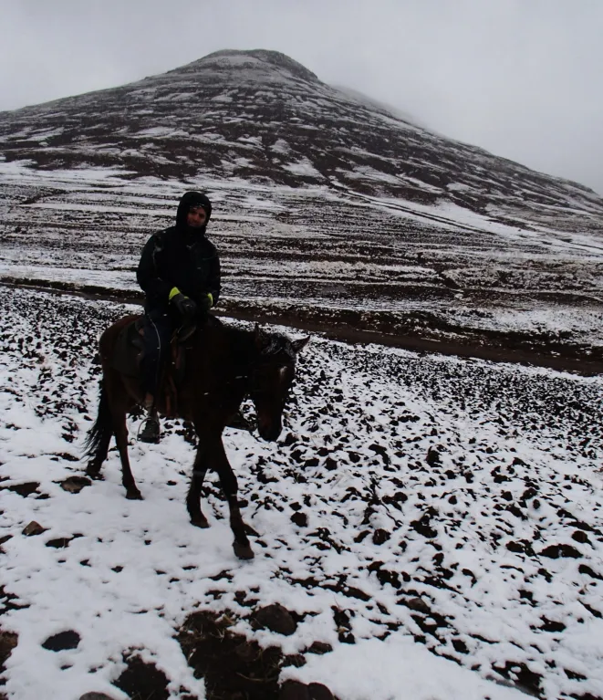

ABOUT LESOTHO
About Lesotho
Discover the country, the people, and the places that make a visit memorable.
THE COUNTRY
Geography and climate
Lesotho is a landlocked country entirely surrounded by South Africa. Its landscape rises from western plateaus and foothills to the Maloti and Drakensberg mountains. Even its lowest points are high above sea level, giving Lesotho its name as the “Kingdom in the Sky.”
Maseru is the capital. Sesotho and English are the official languages. Thabana Ntlenyana, at 3,482 metres, is the country's highest peak. Summers are generally warmer and wetter; winters are dry and can bring snow to the highlands.
PEOPLE & HERITAGE
People, history, and culture
The Basotho nation took shape under King Moshoeshoe I in the nineteenth century. Thaba Bosiu became his mountain stronghold and remains an important place in the country’s history. Museums, monuments, villages, and local guides help visitors understand the stories behind the landscape.
Basotho life is expressed through language, music, crafts, food, dress, and community traditions. Be a considerate guest: ask before taking photographs, follow guidance at cultural sites, and support local guides, artists, and businesses.
Outdoor experiences include hiking, pony trekking, scenic drives, and visits to waterfalls and dams. Mountain weather can change quickly, so prepare for the season and check local conditions.
PLACES TO VISIT
Places to visit
Choose a region or combine a few stops. Allow time for mountain roads and local visits.

WATERFALL · SEMONKONG
Maletsunyane Falls
A 192-metre waterfall plunges into a gorge near Semonkong.
More about this place
Enjoy the viewpoints and surrounding highland scenery. Local operators can arrange guides, pony trips, hikes, and abseiling. Confirm activity availability and safety arrangements before booking.

HISTORY · MASERU DISTRICT
Thaba Bosiu
A historic stronghold associated with King Moshoeshoe I.
More about this place
Located about 24 kilometres from Maseru, Thaba Bosiu is a national monument and important site in Basotho history. Allow time for the cultural village and local interpretation.

HERITAGE · BEREA
Kome Cave Dwellings
Distinctive sandstone dwellings with a living history.
More about this place
The dwellings are in the Pulane area of Berea. The site is connected with Basotho family histories and cultural activities. Follow local guidance, since the site is still part of community life.

WATER & ENGINEERING · THABA-TSEKA
Katse Dam
A major dam and reservoir set within the highlands.
More about this place
Learn about the Lesotho Highlands Water Project and the surrounding mountain scenery. The LHDA lists dam-wall tours and visitor information; check its current schedule and booking requirements before travelling.

NATURE · QACHA’S NEK
Sehlabathebe National Park
Remote alpine scenery, wildlife, and San rock art.
More about this place
Lesotho’s first national park is part of the transnational Maloti-Drakensberg World Heritage property. Roads are remote and may be rough; plan transport, accommodation, food, and park access in advance.

MOUNTAIN TREK · MOKHOTLONG
Thabana Ntlenyana
Lesotho’s highest peak, at 3,482 metres.
More about this place
This high-altitude destination is best approached with careful planning and experienced local support. Prepare for cold, wind, changing weather, and challenging terrain.
BEFORE YOU SET OUT
Travel information
Plan for the season
Pack layers and check forecasts; highland winters can bring severe cold and snow.
Allow extra time
Mountain routes and remote roads can make journeys slower than expected.
Check before visiting
Confirm current access, tours, accommodation, and local transport with providers.
Be a considerate guest
Respect local customs, ask before photographing people, and support community businesses.
OFFICIAL AND HERITAGE INFORMATION
Government of Lesotho · About the country
Visit Lesotho · Places to visit
LHDA · Katse and Mohale tourism
UNESCO · Maloti-Drakensberg Park